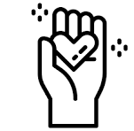

Welcome to Yayasan Islam Darul Ehsan!
Yayasan Islam Darul Ehsan is a loving home dedicated to providing care, education, and a nurturing environment for children in need. We believe every child deserves a chance to thrive and reach their full potential.
Our mission is to empower these children with the tools and support they need to build a brighter future for themselves and their community.
Our Vision & Mission
Vision
To become a Foundation that is trusted in supporting target groups, nurturing responsible, compassionate, and resilient individuals who contribute positively to society.
Mission
To provide a safe and supportive home environment, comprehensive education, emotional well-being, and life skills development for children in our care while also carrying out the trust efficiently and with integrity.
How We Use Donations
- Education: School fees, books, uniforms, and tutoring.
- Food & Nutrition: Wholesome and balanced meals daily.
- Healthcare: Medical check-ups, medication, and emergency care.
- Shelter & Utilities: Maintenance of the home, electricity, water.
- Personal Development: Life skills training, sports, arts and crafts.
Upcoming Events
Annual Charity Bazaar
Date: August 15, 2025
Time: 10:00 AM - 4:00 PM
Location: Community Hall, Taman Bahagia
Join us for a fun-filled day with food, games, and unique handcrafted items!
Volunteer Appreciation Day
Date: September 10, 2025
Time: 6:00 PM - 8:00 PM
Location: Our Home Auditorium
A special evening to thank our dedicated volunteers for their invaluable contributions.
Quick Facts About Our Impact
 Children Supported
Children Supported
Over 50+ children have found a loving home and a brighter future.
Educational Success
95% of our school-aged children achieve above-average academic results.
 Dedicated Volunteers
A network of 100+ passionate volunteers contribute their time and skills.